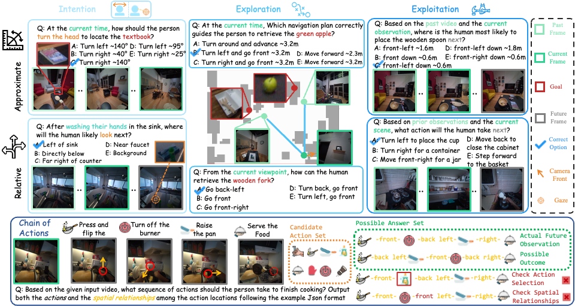
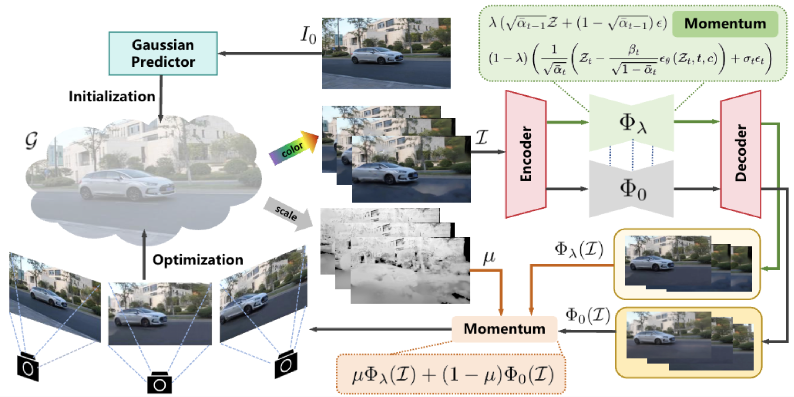

|
Jinzhao Li
I am a senior undergraduate student at Xingjian College, Tsinghua University.
I will start my PhD at the College of AI, Tsinghua University in 2026, advised by
Prof. Miao Liu.
Since Summer 2025, I have been an algorithm intern at ByteDance.
My current research interests lie in egocentric vision and multimodal foundation models.
Feel free to contact me if you are interested in our work or would like to collaborate.
Email /
Scholar /
Github
|
|
Honors & Awards
- [2025] National Scholarship (Highest honor for undergraduates in China)
- [2023 & 2024 & 2025] Comprehensive Excellence Scholarship, Tsinghua University
- [2025] Outstanding Innovation Scholarship, Tsinghua University
- [2024] Academic Excellence Scholarship, Tsinghua University
- [2023] Sports Excellence Scholarship, Tsinghua University
|
|
|
B.S. in Mechanics & Vehicle Engineering, Tsinghua University
2022–2026 (expected)
Ranked 1st in Major
|
Publications
* Equal contribution † Project leader
|
|

|
EgoProx: Evaluating MLLMs on Egocentric 3D Proximity Reasoning Across a Cognitive Hierarchy
Jinzhao Li,
Yinuo Chen,
Dongxu Piao,
Panwang Pan,
Yifan Yu,
Dong Wang,
Honglei Yan,
Liang Yue,
Shaofei Wang,
Yixin Chen,
Siyuan Huang,
Miao Liu
CVPR, 2026
project page /
arXiv /
code
We introduce EgoProx, a benchmark for egocentric 3D proximity reasoning that evaluates whether MLLMs can reason about spatial relations between the human body and surrounding objects across a cognitive hierarchy of intention, exploration, exploitation, and chain of actions.
|
|

|
Scene Splatter: Momentum 3D Scene Generation from Single Image with Video Diffusion Model
Shengjun Zhang,
Jinzhao Li,
Xin Fei,
Hao Liu,
Yueqi Duan
CVPR, 2025
project page /
arXiv /
code
In this paper, we propose Scene Splatter, a momentum 3D scene generation paradigm that introduces existing scene information as momentum during generation to balance generative priors and scene consistency.
|
|
{kind=link}